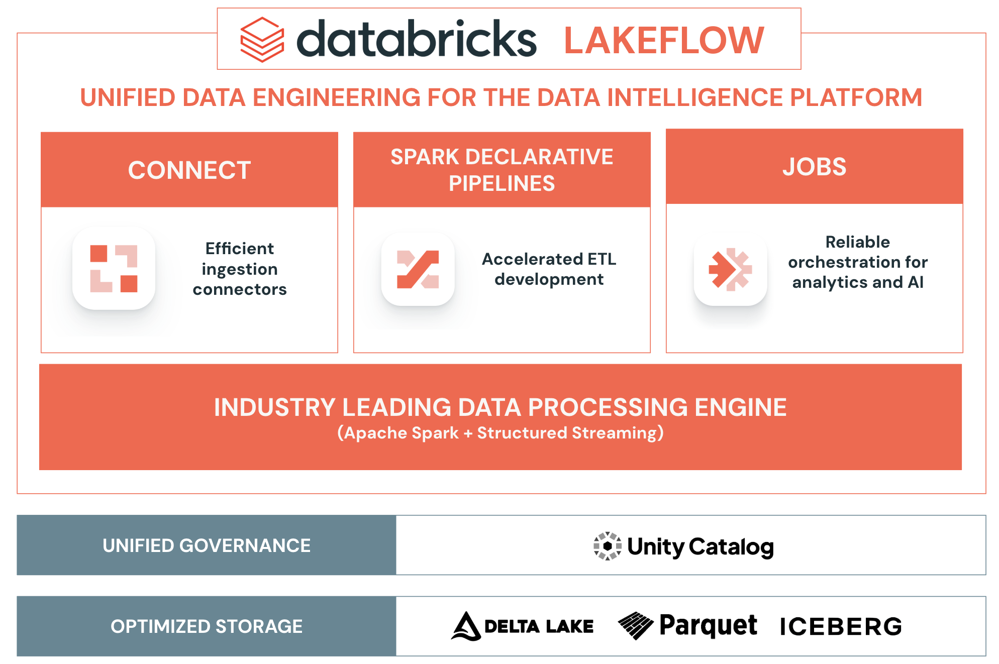
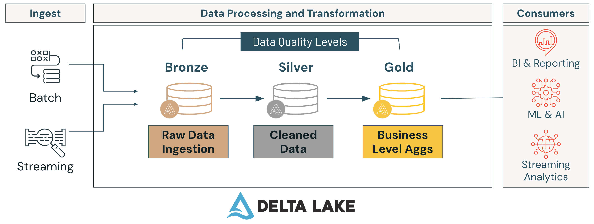

Section 1 · Databricks Intelligence Plattform · Quelle: Kurs 1 & Kurs 2, jeweils Lektion 1
Dieses Dokument bildet den Einstieg in die gesamte Dokumentationsreihe. Es beantwortet drei Fragen: Was ist die Databricks-Plattform eigentlich, wie organisiert sie Daten intern (Medallion-Architektur und Unity Catalog), und wie hängen die sechs folgenden Sections mit dem Databricks-Produkt Lakeflow zusammen. Wer diese Landkarte im Kopf hat, kann die Detail-PDFs der übrigen Sections deutlich leichter einordnen.
Databricks ist im Kern eine Lakehouse-Plattform: Sie kombiniert die Kostenvorteile und Flexibilität eines Data Lakes (offene Dateiformate, beliebig skalierbarer Cloud-Speicher) mit den Verlässlichkeitsgarantien eines klassischen Data Warehouse (Transaktionssicherheit, Schema-Durchsetzung, schnelle SQL-Abfragen). Möglich wird das durch Delta Lake, ein offenes Tabellenformat, das auf Parquet-Dateien aufsetzt und zusätzlich ein JSON-basiertes Transaktionsprotokoll (den Delta Log) mitführt. Dieses Protokoll verleiht sogenannten Delta-Tabellen Eigenschaften, die man sonst nur aus Datenbanken kennt:
INSERT, UPDATE, DELETE und MERGE funktionieren wie in einer relationalen Datenbank.Auf dieser Speicherschicht setzt Databricks zwei weitere Säulen auf: Unity Catalog für die einheitliche Governance (siehe Kapitel 3 sowie Section 7) und Lakeflow für Ingestion, Transformation und Orchestrierung (siehe Kapitel 4 sowie Sections 2–4). Als Verarbeitungs-Engine kommt durchgängig Apache Spark inklusive Structured Streaming zum Einsatz, beschleunigt durch die proprietäre Photon-Engine – Details dazu in Section 6.

Daten werden in Databricks typischerweise nicht in einem Schritt von der Rohquelle zur fertigen Kennzahl verarbeitet, sondern durchlaufen mehrere aufeinander aufbauende Qualitätsstufen – die sogenannte Medallion-Architektur, gelegentlich auch als Multi-Hop-Architektur bezeichnet, da die Daten schrittweise mehrere „Hops“ (Stufen) durchlaufen:
Jede Stufe kann sowohl aus Batch- als auch aus Streaming-Quellen gespeist werden; der zentrale Vorteil ist, dass Datenqualität und Nutzbarkeit mit jeder Stufe steigen, während gleichzeitig die Rohdaten der Bronze-Schicht als Fallback erhalten bleiben. Die wichtigsten Vorteile dieses Musters im Überblick:

Unity Catalog ist die zentrale Verwaltungsschicht für alle Daten- und KI-Objekte im Workspace – unabhängig davon, ob es sich um Tabellen, Dateien, Machine-Learning-Modelle oder Dashboards handelt. Er stellt Zugriffskontrolle, Auditing, Data Lineage, Datenqualitäts-Monitoring und Discoverability über beliebig viele Workspaces hinweg bereit. Die Objekte sind hierarchisch organisiert:
| Ebene | Bedeutung |
|---|---|
| Metastore | Oberste Ebene pro Cloud-Region; enthält die Metadaten aller Catalogs. In der Regel ein Metastore pro Organisation/Region. |
| Catalog | Oberste Organisationseinheit für Daten, z. B. getrennt nach Umgebung (dev, prod) oder Geschäftsbereich. |
| Schema (Database) | Gruppiert zusammengehörige Tabellen, Views und Volumes innerhalb eines Catalogs, ähnlich einem Datenbankschema. |
| Table / View | Die eigentlichen strukturierten Daten – als Managed Table (Databricks verwaltet Daten und Metadaten) oder External Table (nur Metadaten werden verwaltet). |
| Volume | Governed Zugriff auf nicht-tabellarische Dateien (z. B. Rohdateien vor der Ingestion, Bilder, Modell-Artefakte). |
Der vollqualifizierte Name eines Objekts folgt entsprechend dem Muster catalog.schema.table, z. B. prod.sales.orders_gold. Zugriffsrechte werden über Standard-SQL-Befehle wie GRANT SELECT ON TABLE ... TO ... vergeben und lassen sich bis auf Zeilen- und Spaltenebene verfeinern (siehe Section 7 – Governance and Security).
Lakeflow ist die Sammelbezeichnung für Databricks' integrierte Data-Engineering-Werkzeuge. Es besteht aus drei (inzwischen vier) Kernkomponenten, die inhaltlich genau den ersten Themenordnern dieser Dokumentationsreihe entsprechen:
| Section | Thema | Lakeflow-/Plattform-Bezug |
|---|---|---|
| 1 | Databricks Intelligence Plattform | Dieses Dokument – Lakehouse-Grundlagen, Medallion-Architektur, Unity Catalog, Lakeflow-Landkarte |
| 2 | Data Ingestion and Loading | Connect – Batch-/Streaming-Ingestion, Metadaten, Enterprise-Connectoren, MERGE INTO |
| 3 | Data Transformation and Modelling | Pipelines – Streaming Tables, Materialized Views, Expectations, Multi-Flow, Liquid Clustering, Delta Sinks, CDC (SCD Type 1 & 2) |
| 4 | Working with Lakeflow Jobs | Jobs – Tasks, Scheduling, bedingte/iterative Tasks, Monitoring, Best Practices |
| 5 | Implementing CI/CD | Software Engineering & Deployment – Modularisierung, Unit-/Integrationstests, Git, Asset Bundles, Multi-Environment-Deployments |
| 6 | Troubleshooting, Monitoring and Optimization | Spark-Engine – AQE, Data Skipping, Liquid Clustering, Skew/Shuffle/Spill, Cluster-Auswahl/Photon |
| 7 | Governance and Security | Unity Catalog – ACLs, Row Filters/Column Masks, PII-Schutz, CDF, DSGVO/CCPA |
Kurz gesagt: Section 2–4 behandeln die drei klassischen Lakeflow-Komponenten (Connect, Pipelines, Jobs), Section 6–7 vertiefen die darunterliegenden Plattformdienste (Performance, Governance), und Section 5 zeigt, wie man all das softwaretechnisch sauber entwickelt, testet und produktiv ausrollt – von der ersten Unit-Test-Zeile bis zum automatisierten Asset-Bundle-Deployment.